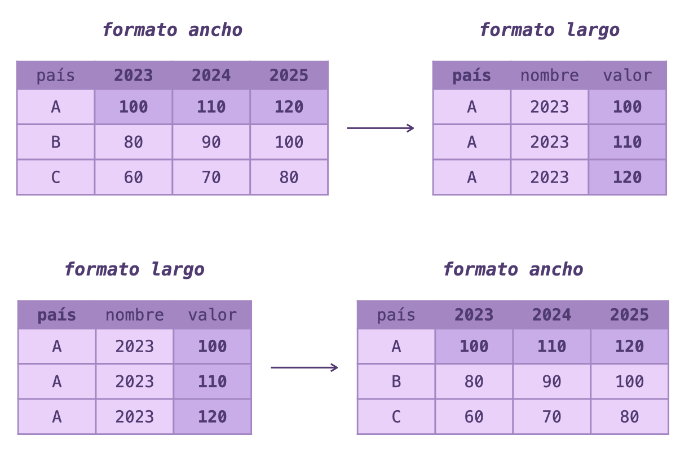
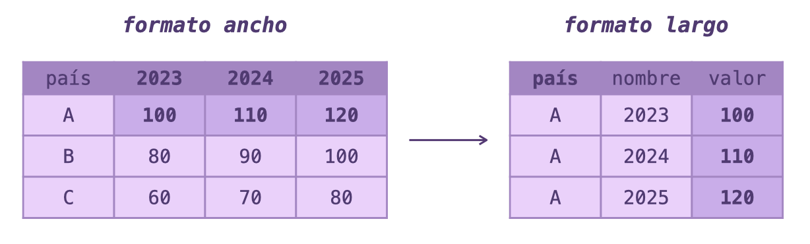
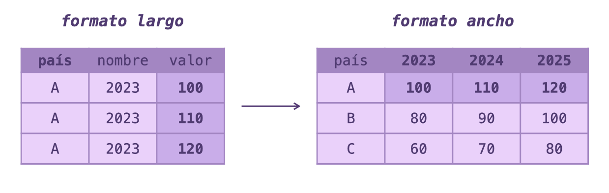

Transformación de datos entre formato ancho y largo con {tidyr}
29/11/2025
Los datos pueden existir en distintos formatos o estructuras, y el poder transformar los datos entre distintas estructuras es una habilidad clave.
En este tutorial aprenderemos a usar las funciones pivot_longer() y pivot_wider() del
paquete {tidyr} para cambiar entre formatos de datos ancho (wide) y largo (long).
Índice
Formatos de datos
No existe una forma estandarizada de estructurar los datos. La estructura o formato que tengan los datos va a depender de muchas cosas: de dónde provienen los datos, para que se van a usar los datos, etc. Dependiendo de estas distintas necesidades los datos se pueden estructurar distintos.
Dos de estos formatos o estructuras de datos son los datos anchos y largos.
Datos en formato ancho
El formato ancho (wide) es cuando cada variable que describe las observaciones tiene su propia columna. Esto resulta en varias columnas, cada una describiendo un aspecto distinto de cada observación.
Por ejemplo:
| pais | pobreza | esperanza | escolaridad |
|---|---|---|---|
| Chile | 5 | 81.17 | 11.29 |
| Uruguay | 6 | 78.14 | 10.54 |
| Argentina | 11 | 77.69 | 11.18 |
| Costa Rica | 13 | 80.80 | 8.84 |
| Panamá | 13 | 79.59 | 10.83 |
| Bolivia | 15 | 68.58 | 10.02 |
Generalmente este formato se usa para presentar los datos, ya que es fácil de leer y comparar valores lado a lado.
Datos en formato largo
El formato largo (long) es cuando las variables se encuentran en una sola columna, y los valores de las variables en otra columna, lo que significa que cada observación puede ocupar más de una fila.
Por ejemplo:
| pais | variable | valor |
|---|---|---|
| Chile | pobreza | 5.00 |
| Chile | esperanza | 81.17 |
| Chile | escolaridad | 11.29 |
| Uruguay | pobreza | 6.00 |
| Uruguay | esperanza | 78.14 |
| Uruguay | escolaridad | 10.54 |
| Argentina | pobreza | 11.00 |
| Argentina | esperanza | 77.69 |
| Argentina | escolaridad | 11.18 |
Se trata de un formato de datos más conveniente para procesar información, o para organizar estructuras de datos más complejas.
Transformación de formatos
Ahora veremos cómo podemos pasar desde una estructura o formato de datos hacia la otra. Usaremos datos sobre países de América Latina, que fueron obtenidos desde tablas de Wikipedia usando web scraping. Revisa el script del scraping aquí.
Desde ancho hacia largo
Si tenemos nuestros datos cuyas variables están distribuidas en columnas, y queremos pasarlas hacia filas, necesitamos pivotar la tabla hacia lo largo.
La función pivot_longer() toma las columnas que contienen las variables, y las apila en dos nuevas columnas: una con los nombres de las variables, y otra con sus valores.
library(tidyr)
library(dplyr)
Veamos un ejemplo común. Cuando buscamos datos que muestran la evolución de una variable, en general los datos se estructuran con columnas que describen los valores de una variable separadas en columnas por mes o año.
desarrollo <- tribble(
~pais, ~"2023", ~"2022", ~"2021", ~"2019",
"Chile", 0.878, 0.869, 0.865, 0.867,
"Argentina", 0.865, 0.858, 0.847, 0.861,
"Uruguay", 0.862, 0.852, 0.837, 0.830,
"Panamá", 0.839, 0.835, 0.819, 0.824,
"Costa Rica", 0.833, 0.823, 0.817, 0.821,
"Perú", 0.794, 0.790, 0.764, 0.784,
"México", 0.789, 0.783, 0.761, 0.788,
"Colombia", 0.788, 0.782, 0.762, 0.777,
"Brasil", 0.786, 0.780, 0.768, 0.776,
"Ecuador", 0.777, 0.773, 0.753, 0.765
)
Esta tabla contiene datos del índice de desarrollo humano para 10 países de la Latinoamérica:
| pais | 2023 | 2022 | 2021 | 2019 |
|---|---|---|---|---|
| Chile | 0.878 | 0.869 | 0.865 | 0.867 |
| Argentina | 0.865 | 0.858 | 0.847 | 0.861 |
| Uruguay | 0.862 | 0.852 | 0.837 | 0.830 |
| Panamá | 0.839 | 0.835 | 0.819 | 0.824 |
| Costa Rica | 0.833 | 0.823 | 0.817 | 0.821 |
| Perú | 0.794 | 0.790 | 0.764 | 0.784 |
| México | 0.789 | 0.783 | 0.761 | 0.788 |
| Colombia | 0.788 | 0.782 | 0.762 | 0.777 |
| Brasil | 0.786 | 0.780 | 0.768 | 0.776 |
| Ecuador | 0.777 | 0.773 | 0.753 | 0.765 |
Tener los datos así puede ser útil para mirarlos y presentarlos, pero se vuelve difícil trabajar con ellos, por ejemplo, para calcular la variación entre cada año, o para graficar la evolución del índice de desarrollo humano a través del tiempo.
Para convertirlos en formato largo usamos pivot_longer() indicando las columnas que queremos pivotar:
desarrollo_largo <- desarrollo |>
pivot_longer(cols = c("2023", "2022", "2021", "2019"),
names_to = "año",
values_to = "índice")
| pais | año | índice |
|---|---|---|
| Chile | 2023 | 0.878 |
| Chile | 2022 | 0.869 |
| Chile | 2021 | 0.865 |
| Chile | 2019 | 0.867 |
| Argentina | 2023 | 0.865 |
| Argentina | 2022 | 0.858 |
| Argentina | 2021 | 0.847 |
| Argentina | 2019 | 0.861 |
Ahora cada país abarca varias filas, porque ahora las filas son también los años. Es decir, pasamos a tener una fila por cada país, tener una fila por cada año de cada país. De este modo, ahora todas las cifras se encuentran en una sola columna.
¿Qué hicimos?
Con cols = c("2023", "2022", "2021", "2019") especificamos las columnas que queremos alargar.
Con los argumentos names_to y values_to definimos el nombre de las nuevas columnas con los nombres y los valores de las columnas originales. Podemos dejar estos últimos dos argumentos vacíos para que se usen los nombres por defecto (name y value).
Ejemplos: ¿Para qué nos sirve ésto?
Ahora podemos filtrar por año fácilmente:
desarrollo_largo |>
filter(año == "2023")
# A tibble: 10 × 3
pais año índice
<chr> <chr> <dbl>
1 Chile 2023 0.878
2 Argentina 2023 0.865
3 Uruguay 2023 0.862
4 Panamá 2023 0.839
5 Costa Rica 2023 0.833
6 Perú 2023 0.794
7 México 2023 0.789
8 Colombia 2023 0.788
9 Brasil 2023 0.786
10 Ecuador 2023 0.777
Podemos encontrar datos donde el índice cumpla algún criterio:
desarrollo_largo |>
filter(índice > 0.86 & índice < 0.87)
# A tibble: 6 × 3
pais año índice
<chr> <chr> <dbl>
1 Chile 2022 0.869
2 Chile 2021 0.865
3 Chile 2019 0.867
4 Argentina 2023 0.865
5 Argentina 2019 0.861
6 Uruguay 2023 0.862
O podemos calcular la variación entre años:
desarrollo_largo |>
filter(pais == "Chile") |>
arrange(año) |>
mutate(variación = índice - lag(índice),
aumento = if_else(variación > 0, "Sí", "No"))
# A tibble: 4 × 5
pais año índice variación aumento
<chr> <chr> <dbl> <dbl> <chr>
1 Chile 2019 0.867 NA <NA>
2 Chile 2021 0.865 -0.00200 No
3 Chile 2022 0.869 0.00400 Sí
4 Chile 2023 0.878 0.00900 Sí
Y lo mejor es que ahora resulta mucho más fácil poder hacer el gráficos con estos datos, dado que la información necesaria se encuentra agrupada en sólo dos columnas:
library(ggplot2)
library(thematic)
thematic_on(fg = "#553A74",
bg = "#EAD2FA")
desarrollo_largo |>
filter(pais %in% c("Chile", "Argentina", "Brasil", "Perú")) |>
ggplot() +
aes(año, índice, color = pais, group = pais) +
geom_line(linewidth = 1, alpha = 0.8) +
geom_point(size = 3) +
labs(y = "Índice de desarrollo humano", color = "País", x = NULL)

Veamos otro ejemplo: una tabla con tres variables distintas, que nos muestran datos de países latinoamericanos sobre pobreza y desarrollo.
pobreza <- tribble(
~pais, ~pobreza, ~esperanza, ~escolaridad,
"Chile", 5, 81.17, 11.29,
"Uruguay", 6, 78.14, 10.54,
"Argentina", 11, 77.69, 11.18,
"Costa Rica", 13, 80.8, 8.84,
"Panamá", 13, 79.59, 10.83,
"Bolivia", 15, 68.58, 10.02,
"Paraguay", 20, 73.84, 8.93,
"México", 22, 75.07, 9.35,
"Brasil", 24, 75.85, 8.43,
"El Salvador", 28, 72.1, 7.3
)
| pais | pobreza | esperanza | escolaridad |
|---|---|---|---|
| Chile | 5 | 81.17 | 11.29 |
| Uruguay | 6 | 78.14 | 10.54 |
| Argentina | 11 | 77.69 | 11.18 |
| Costa Rica | 13 | 80.80 | 8.84 |
| Panamá | 13 | 79.59 | 10.83 |
| Bolivia | 15 | 68.58 | 10.02 |
| Paraguay | 20 | 73.84 | 8.93 |
| México | 22 | 75.07 | 9.35 |
| Brasil | 24 | 75.85 | 8.43 |
| El Salvador | 28 | 72.10 | 7.30 |
En las filas tenemos las observaciones (países), y en las columnas tenemos tres variables distintas: pobreza (medida por el Banco Mundial como porcentaje de la población que recibe menos de US$6,85 al día), esperanza de vida, y escolaridad promedio.
Si convertimos esta tabla hacia el formato largo, vamos a tener la información estructurada de forma que cada variable ocupe una fila distinta:
pobreza_largo <- pobreza |>
pivot_longer(cols = c(pobreza, esperanza, escolaridad),
names_to = "variable",
values_to = "valor")
| pais | variable | valor |
|---|---|---|
| Chile | pobreza | 5.00 |
| Chile | esperanza | 81.17 |
| Chile | escolaridad | 11.29 |
| Uruguay | pobreza | 6.00 |
| Uruguay | esperanza | 78.14 |
| Uruguay | escolaridad | 10.54 |
| Argentina | pobreza | 11.00 |
| Argentina | esperanza | 77.69 |
| Argentina | escolaridad | 11.18 |
Ahora cada país ocupa tres filas, una por cada variable. Esto nos permite filtrar y analizar los datos de forma más flexible.
Ejemplos: ¿Para qué nos sirve ésto?
pobreza_largo |>
filter(variable == "escolaridad")
# A tibble: 10 × 3
pais variable valor
<chr> <chr> <dbl>
1 Chile escolaridad 11.3
2 Uruguay escolaridad 10.5
3 Argentina escolaridad 11.2
4 Costa Rica escolaridad 8.84
5 Panamá escolaridad 10.8
6 Bolivia escolaridad 10.0
7 Paraguay escolaridad 8.93
8 México escolaridad 9.35
9 Brasil escolaridad 8.43
10 El Salvador escolaridad 7.3
library(ggplot2)
library(thematic)
thematic_on(fg = "#553A74",
bg = "#EAD2FA")
pobreza_largo |>
mutate(variable = case_match(variable,
"pobreza" ~ "Pobreza (%)",
"esperanza" ~ "Esperanza de vida",
"escolaridad" ~ "Escolaridad promedio")) |>
ggplot() +
aes(y = pais, x = valor, fill = variable) +
geom_col(width = 0.5) +
facet_wrap(~variable, scales = "free_x") +
guides(fill = guide_none()) +
labs(x = NULL, y = NULL)
Selección de columnas
Cuando tenemos muchas columnas para pivotar, es mejor usar técnicas o funciones que las abarquen todas en vez de escribirlas manualmente.
Seleccionar todas excepto algunas
Podemos usar el operador - para seleccionar todas las columnas excepto las que especifiquemos:
pobreza |>
pivot_longer(cols = -pais,
names_to = "variable",
values_to = "valor")
Esto es equivalente a escribir cols = c(pobreza, esperanza, escolaridad), pero mucho más corto cuando tenemos muchas columnas.
Seleccionar por posición
También podemos seleccionar columnas por su posición numérica:
desarrollo |>
pivot_longer(cols = 2:last_col(),
names_to = "año",
values_to = "índice")
Esto selecciona desde la segunda columna hasta la última (last_col()); es decir, los cuatro años de la tabla).
Seleccionar con funciones auxiliares
Se pueden usar todas las funciones de {tidyselect} para seleccionar columnas según su texto, formato, y más:
# seleccionar columnas que empiezan con cierto texto
desarrollo |>
pivot_longer(cols = starts_with("20"),
names_to = "año",
values_to = "índice")
# seleccionar columnas que son numéricas
desarrollo |>
pivot_longer(cols = where(is.numeric),
names_to = "año",
values_to = "índice")
# A tibble: 40 × 3
pais año índice
<chr> <chr> <dbl>
1 Chile 2023 0.878
2 Chile 2022 0.869
3 Chile 2021 0.865
4 Chile 2019 0.867
5 Argentina 2023 0.865
6 Argentina 2022 0.858
7 Argentina 2021 0.847
8 Argentina 2019 0.861
9 Uruguay 2023 0.862
10 Uruguay 2022 0.852
# ℹ 30 more rows
Desde largo hacia ancho
pivot_wider() hace la operación inversa a pivot_longer(): toma valores que están apilados en filas y los distribuye en múltiples columnas nuevas.
Es decir que pasamos de datos donde las variables de cada observación se encuentran en varias filas, a una tabla donde cada observación usará una fila y las variables estarán en varias columnas.
Partamos desde la tabla pobreza_largo que creamos anteriormente:
| pais | variable | valor |
|---|---|---|
| Chile | pobreza | 5.00 |
| Chile | esperanza | 81.17 |
| Chile | escolaridad | 11.29 |
| Uruguay | pobreza | 6.00 |
| Uruguay | esperanza | 78.14 |
| Uruguay | escolaridad | 10.54 |
| Argentina | pobreza | 11.00 |
| Argentina | esperanza | 77.69 |
| Argentina | escolaridad | 11.18 |
Para volver a convertirla al formato ancho usamos pivot_wider():
pobreza_ancho <- pobreza_largo |>
pivot_wider(names_from = variable,
values_from = valor)
| pais | pobreza | esperanza | escolaridad |
|---|---|---|---|
| Chile | 5 | 81.17 | 11.29 |
| Uruguay | 6 | 78.14 | 10.54 |
| Argentina | 11 | 77.69 | 11.18 |
| Costa Rica | 13 | 80.80 | 8.84 |
| Panamá | 13 | 79.59 | 10.83 |
| Bolivia | 15 | 68.58 | 10.02 |
| Paraguay | 20 | 73.84 | 8.93 |
| México | 22 | 75.07 | 9.35 |
| Brasil | 24 | 75.85 | 8.43 |
| El Salvador | 28 | 72.10 | 7.30 |
Ahora cada variable tiene su propia columna nuevamente.
¿Qué hicimos?
Con names_from indicamos desde cuál variable sacaremos los nombres de las nuevas columnas que queremos crear.
Con values_from indicamos desde cuál columna sacaremos los valores que rellenarán las celdas de esas nuevas columnas.
Veamos otro ejemplo usando la tabla desarrollo_largo:
| pais | año | índice |
|---|---|---|
| Chile | 2023 | 0.878 |
| Chile | 2022 | 0.869 |
| Chile | 2021 | 0.865 |
| Chile | 2019 | 0.867 |
| Argentina | 2023 | 0.865 |
| Argentina | 2022 | 0.858 |
| Argentina | 2021 | 0.847 |
| Argentina | 2019 | 0.861 |
Podemos convertirla de vuelta al formato ancho para tener cada año como una columna separada:
desarrollo_ancho <- desarrollo_largo |>
pivot_wider(names_from = año,
values_from = índice)
| pais | 2023 | 2022 | 2021 | 2019 |
|---|---|---|---|---|
| Chile | 0.878 | 0.869 | 0.865 | 0.867 |
| Argentina | 0.865 | 0.858 | 0.847 | 0.861 |
| Uruguay | 0.862 | 0.852 | 0.837 | 0.830 |
| Panamá | 0.839 | 0.835 | 0.819 | 0.824 |
| Costa Rica | 0.833 | 0.823 | 0.817 | 0.821 |
| Perú | 0.794 | 0.790 | 0.764 | 0.784 |
| México | 0.789 | 0.783 | 0.761 | 0.788 |
| Colombia | 0.788 | 0.782 | 0.762 | 0.777 |
| Brasil | 0.786 | 0.780 | 0.768 | 0.776 |
| Ecuador | 0.777 | 0.773 | 0.753 | 0.765 |
Ahora tenemos cada año como columna, lo que facilita comparar los valores entre años lado a lado.
Ejemplos: ¿Para qué nos sirve ésto?
Con los datos en formato ancho podemos calcular fácilmente diferencias entre años específicos:
desarrollo_ancho |>
mutate(cambio_2019_2023 = `2023` - `2019`) |>
select(pais, `2019`, `2023`, cambio_2019_2023) |>
arrange(desc(cambio_2019_2023))
# A tibble: 10 × 4
pais `2019` `2023` cambio_2019_2023
<chr> <dbl> <dbl> <dbl>
1 Uruguay 0.83 0.862 0.0320
2 Panamá 0.824 0.839 0.0150
3 Costa Rica 0.821 0.833 0.0120
4 Ecuador 0.765 0.777 0.0120
5 Chile 0.867 0.878 0.0110
6 Colombia 0.777 0.788 0.0110
7 Perú 0.784 0.794 0.0100
8 Brasil 0.776 0.786 0.0100
9 Argentina 0.861 0.865 0.00400
10 México 0.788 0.789 0.00100
Pero en general el formato ancho se usa para posteriormente guardar los datos en una tabla Excel y presentárselos a otras personas, o bien, generar tablas usando R destinadas a su lectura en informes o reportes.
¿Cuándo usar cada formato?
No existe un formato correcto qué pueda aplicarse a todas las tablas de datos. Esto debe depender de lo que necesites hacer.
En general, te vas a dar cuenta intuitivamente que el formato de tus datos te está haciendo más difícil hacer ciertas cosas, y en ese caso se recomienda transformar la estructura, ya sea temporalmente y luego deshacer la transformación, o permanentemente en función del tipo de datos que estás trabajando.
Formato largo:
- Cuando vayas a
hacer gráficos con
{ggplot2} - Cuando necesites agrupar y resumir datos con
group_by()ysummarise() - Cuando quieras aplicar filtros sobre los valores de las variables
Formato ancho:
- Cuando quieras presentar tablas para reportes
- Cuando necesites comparar valores lado a lado entre variables
- Cuando vayas a exportar datos a Excel para su lectura o consulta
- Cuando quieras calcular diferencias o razones entre columnas específicas
- Cuando necesites hacer operaciones matemáticas simples entre variables
Saber transformar datos entre formato ancho y largo es una habilidad esencial para trabajar con datos en R. Dominar esta transformaciones de estructuras de datos te entrega mucha libertad al momento de manipular, limpiar, y trabajar con conjuntos de datos complejos.